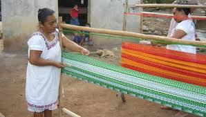
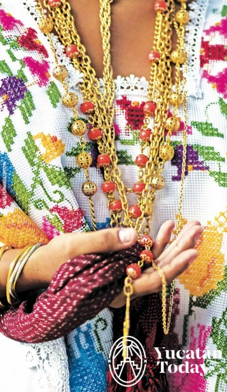
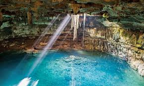

Comenzamos con la enigmática civilización Maya, cuyas huellas aún asombran en Yucatán. Estos maestros del tiempo eran expertos en astronomía, con un calendario preciso, y su arquitectura te dejará boquiabierto: templos piramidales, palacios majestuosos... ¡una maravilla! Explora las misteriosas ruinas de Chichén Itzá, una de las Siete Maravillas del Mundo, y descubre los secretos de la pirámide de Kukulcán. Los mayas dominaron la Península de Yucatán desde el 2000 a.C. hasta la llegada de los conquistadores en 1527 d.C. ¡Una aventura épica te espera!
"Los mayas fueron una de las culturas más avanzadas de su tiempo, conocidos por su calendario preciso, sus conocimientos astronómicos y su impresionante arquitectura."
La cultura yucateca está viva y vibrante gracias a sus tradiciones y celebraciones únicas, reflejan una rica herencia cultural que combina influencias mayas prehispánicas y españolas. Algunas de las tradiciones más importantes incluyen:
Los artesanos de Yucatán son verdaderos maestros en la creación de textiles y artesanías. Desde los huipiles llenos de color hasta las hamacas tejidas con cariño, cada obra es un cuento que celebra la pasión y el respeto por las raíces. ¡Llévate contigo un pedacito de historia al apoyar a estos artistas locales con una pieza única como souvenir de tu aventura!
Bordados: Los bordados tradicionales de Yucatán representan una forma de arte legada por generaciones de mujeres en la región a lo largo de más de cinco siglos. Estos bordados se emplean en la confección de huipiles, ropa de cama, mantelería, blusas, vestidos, mantillas y tocas. Las técnicas utilizadas, como el deshilado y el hilo contado, dan lugar a creaciones únicas y originales.
Hamacas: Las hamacas yucatecas, confeccionadas con hilo fino de henequén, gozan de renombre internacional por su calidad y confort. Estas hamacas no solo son un símbolo distintivo de la región, sino que también se utilizan tanto para el descanso como para fines decorativos.
Alfarería: La tradición alfarera en Yucatán se remonta a la época prehispánica y se caracteriza por la elaboración de piezas de barro como vasijas, instrumentos musicales y objetos decorativos, los cuales exhiben diseños coloridos y tradicionales.
Joyería: La orfebrería yucateca se destaca por la confección de joyas finas elaboradas con filamentos de oro y plata. Collares, rosarios, zarcillos, cadenas y otras piezas preciosas reflejan la destreza artesanal de la región.
Talabartería: La talabartería implica la creación de artículos a partir de piel o cuero de animales. En Yucatán, se elaboran objetos como aretes, pulseras e instrumentos musicales, decorados con conchas y caracoles, exhibiendo la diversidad artesanal de la región.
 
Un cenote son pozos naturales de agua dulce que se nutre de un río subterráneo, y se forma en diversas ubicaciones, especialmente en la Península de Yucatán, debido a la erosión del suelo. La palabra "cenote" deriva del término maya "dzonot", que se traduce como "caverna con depósito de agua". Estas maravillas naturales son consideradas sagradas por la civilización maya, quienes los veían como puntos de acceso al Inframundo y utilizaban estos sitios para ceremonias, ofrendas y sacrificios. Los cenotes representan uno de los principales atractivos turísticos de Yucatán, con una amplia variedad de ellos que cautivan tanto a los habitantes locales como a los visitantes extranjeros.
Cenote Samulá, ubicado en el municipio de Dzitnup, cerca de Valladolid y a 160 km de la capital yucateca. Este cenote es considerado el más grande de todos los que hay en este estado del país

La cultura yucateca está impregnada de folklore y leyendas que han sido transmitidas de generación en generación. Escucha las historias de la Xtabay, una enigmática figura femenina, o descubre los secretos detrás del famoso Alux, un ser mítico que habita en las selvas.
La X´tabay: relato que aún suscita temor, vinculado a una mujer que se manifiesta en forma de mariposa y seduce a los hombres.
Los Aluxes: Estos seres extraños que se aparecen por las noches en los campos y montes de la península de Yucatán son parte de la cosmovisión ancestral de la región y han sido transmitidos a lo largo de generaciones
El Enano de Uxmal: leyenda que narra la historia de una mujer hechicera y un huevo mágico en la ciudad de Kabah durante el imperio de Uxmal.
Para conocer mas sobre Yucatán puedes revisar estos enlaces
Monumentos
| VIDEO INFORMATIVO |